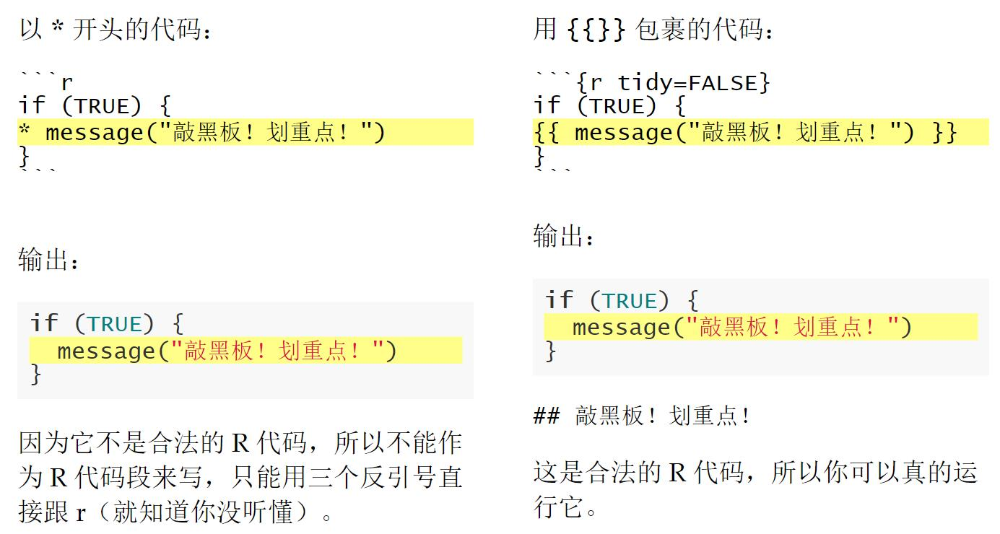
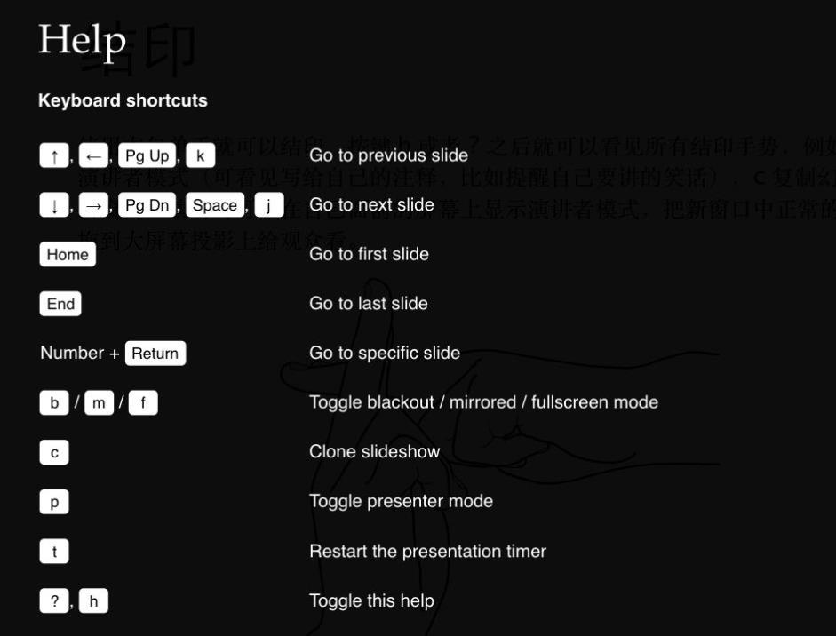

8 写轮眼
8.1 前期配置
（1）安装R包
install.packages("xaringan")（2）创建R Markdown文档
打开RStudio，从菜单栏点击File -> New File -> R Markdown -> From Template -> Ninja Presentation(Simplified Chinese)
（3） 点击 Knit 按钮编译文档
点击 Knit按钮，RStudio会编译，并 实时预览幻灯片（每次你保存文档的时候，它会自动重新编译）。
原理： xaringan 将 R Markdown 的查克拉注入了 remark.js。浏览器中的幻灯片是 remark.js 渲染出来的，而它的 Markdown 源文档是从 R Markdown 生成的（实际上主要是 knitr）。
（4） 查看输出
xaringan 包提供了一个 R Markdown 输出格式 xaringan::moon_reader，你可以在 R Markdown 文档的元数据中使用它，例：
---
title: "啧啧啧，厉害啊"
author: "张三"
date: "2016年12月12日"
output:
xaringan::moon_reader
nature:
autoplay: 30000
highlightStyle: github
---nature 下面的 autoplay 选项可以用来自动播放幻灯片，它的取值是毫秒，例如每 30 秒播放一张片子
nature 下面的 countdown 选项可以为每一页幻灯片添加一个（倒数）计时器，取值同样为毫秒，例如每一页片子都用 60 秒倒计时：
output:
xaringan::moon_reader:
nature:
countdown: 60000选项 highlightLines: true 可以让以 * 开头或者双重大括号 {{ }} 里面的代码被高亮出来；
output:
xaringan::moon_reader:
nature:
highlightLines: true我们举两个栗子 
8.2 键盘快捷键

p 进入演讲者模式（可看见写给自己的注释，比如提醒自己要讲的笑话）
c 复制幻灯片到新窗口；演讲时可以在自己面前的屏幕上显示演讲者模式，把新窗口中正常的幻灯片拖到大屏幕投影上给观众看。
8.3 幻灯片格式
remark（remark.js）是一个简单的基于浏览器的 Markdown 幻灯片工具。
8.3.1 幻灯片的属性
每个新幻灯片都是在三个破折号（dashes）(—)下创建的。破折号后面必须直接跟一个换行符（line break），并且在破折号后面不能有任何其他字符(甚至空格space)。当您看到新幻灯片出现在前一张幻灯片的水平线之后时，可能在三个破折号之后有空格(如果有，您必须删除空格)。
幻灯片的内容可以是任意的，它不一定有幻灯片标题，如果有，标题可以是任何级别(#，##，或###)。
一个幻灯片可以有一些CSS属性，包括class类和background-image背景图像等。属性写在幻灯片的开头，例如。
---
class: center, inverse
background-image: url("images/cool.png")
# A new slide
Content.class属性将给幻灯片的HTML标签定义类名，这样就可以使用CSS为特定的幻灯片设置样式。例如，设置类名为inverse的幻灯片，可以定义CSS规则(在黑色背景上以白色呈现文本):
.inverse {
background-color: #272822;
color: #d6d6d6;
text-shadow: 0 0 20px #333;
}然后调用CSS文件，本例是通过月读xaringan::moon_reader:来调用my-style.css
---
output:
xaringan::moon_reader:
css: "my-style.css"
---实际上，inverse的样式已经在xaringan的默认主题中定义，所以实际上不需要再次定义它，除非想重新定义并覆盖它。
其他的可用类名包括幻灯片所有元素的水平对齐，left，center和right，以及垂直对齐，top，middle和bottom。
背景图片可通过background-image属性设置。路径应该放在url()中，这是CSS语法。你也可以设置背景图像的大小size和位置position，例如:
background-image: url("`r xaringan:::karl`")
background-position: center
background-size: contain所有这些属性都要求略懂CSS。在上面的示例中，我们实际上使用了一个行内表达式xaringan::karl来返回karl Broman 图像的URL，这是xaringan包的亮点之一。
8.3.2 首页标题幻灯片
标题幻灯片（即首页幻灯片），它是从Rmd文档的YAML元数据自动生成的。它包含标题title、副标题subtotal、作者author和日期date(都是可选的)。该幻灯片默认有inverse、center、middle和title-slide类，类似于图7.1中的左侧图像。如果你不喜欢默认样式，你可以自定义。title-slide类，或者通过nature选项下的titleSlideClass选项提供自定义的类向量，例如，
---
output:
xaringan::moon_reader:
nature:
titleSlideClass: ["right", "top", "my-title"]
---你也可以通过seal选项禁止自动标题，然后手动输入：
---
output:
xaringan::moon_reader:
seal: false
---
# My Own Title
### Author
Whatever you want to put on the title slide.8.3.3 内容类
您也可以为幻灯片上的任何元素分配类。语法是.classname [content]。这是remark.js的一个非常强大的特性，也是Pandoc中为数不多的不可用的特性之一。它可以通过CSS为幻灯片上的任何元素设置样式。有一些是内置的内容类，.left[]， .center[]和.right[]来水平对齐幻灯片上的元素，例如，你可以将图像居中:
.center[][]内部的内容可以是任何内容，比如几个段落或列表。xaringan的默认主题提供了另外四个内容类
.left-column[]和.right-column[]提供侧栏sidebar布局。左边的侧边栏很窄(幻灯片宽度的20%)，右边的栏是主栏(幻灯片宽度的75%)。如果你在左栏中有多个2级(##)或3级(###)标题，最后一个标题将被突出显示，而之前的标题将被灰色化。.pull-left[]和.pull-right[]提供两列two-column布局，两列宽度相同。下面是一个例子:
.pull-left[
- One bullet.
- Another bullet.
]
.pull-right[

]如果你知道CSS，你可以设计自己的内容类，例如，如果你想通过.red[]使文本为红色，你可以在CSS中定义:
.red { color: red; }8.3.4 出现动画
您可以使用两个破折号来分隔内容。这两个破折号可以出现在除了内容类内部的任何地方，所以你基本上可以以任何你喜欢的方式分割你的内容，例如，
---
# Two dashes
The easiest way to build incremental slides is...
--
to use two dashes `--` to separate content on a slide.
--
You can divide a slide in _any way you want_.
--
- One bullet
- Another bullet
--
- And one more
--
.center[

Don't saw your slides too hard.
]8.3.5 演讲者注释
在主讲人模式下(按键盘快捷键p)，你可以自己写笔记，笔记下面有三个问号???语法也是Markdown，这意味着您可以编写Markdown支持的任何元素，比如段落、列表、图像等等。例如:
---
The holy passion of Friendship is of so sweet and steady
and loyal and enduring a nature that it will last through
a whole lifetime...
???
_if not asked to lend money_.
--- Mark Twain演讲中一个常见的错误，尤其是对于没有太多经验的演讲者来说，就是在幻灯片中塞进太多的内容。结果要么是演讲者上气不接下气，大声读出这么多单词，要么是观众开始自己静静地读幻灯片，而不去听。幻灯片不是论文或书籍，所以你应该尽量在幻灯片的视觉内容上简洁，而在口头叙述上变长。如果你对一张幻灯片有很多要说的，但不能记住所有的内容，你可以考虑使用演示笔记。
8.3.6 yolo(you only live once)
可随机在幻灯片中插入一张图片，不常用。
---
output:
xaringan::moon_reader:
yolo:
img: kangaroo.jpg
times: 5
---在幻灯片中随机插入kangaroo.jpg5次。
8.4 建立和预览幻灯片
- 一种方式是点击
knit按钮来预览。 - 另一种方式是在RStudio addin点击 “Infinite Moon Reader”或输入
xaringan::inf_mr()函数，只要保存，就自动knit并预览。
8.5 独立HTML输出设置
与其他R Markdown输出格式相比，xaringan::moon_reader的一个区别是，默认情况下它不会生成独立的HTML文档。这意味着在默认情况下，外部依赖项(如图像或JavaScript库)不会嵌入到HTML输出文件中。您可以通过将独立自包含模式打开
`xaringan::moon_reader`由于技术上的困难（remark.js并不是用Pandoc而是使用Markdown在浏览器中渲染），就算设置了独立自包含模式，有时候也不一定完全弄好。
目前如果想独立自包含图片的话，仅仅可以使用 (Markdown syntax), <img src="PATH" /> (HTML syntax), 和background-image: url(PATH)(remark.js syntax for background images)这几种方式，其他方式嵌入图片不会被独立自包含模式识别。
8.6 CSS和主题
在format的xaringan::moon_reader中有一个css选项，可以向该选项传递一个css文件路径向量.
举个栗子。比如你想将一段文字的颜色改为红色，你可以定义一个 CSS 类，如：
.red {
color: #FF0000;
}我们把这段代码保存在一个 CSS 文件中，如 extra.css（假设它跟你的 R Markdown 文件在同一文件夹下），然后通过 css 选项将它引入：
---
output:
xaringan::moon_reader:
css: ["default", "extra.css"]
---现在在 R Markdown 中你就可以用 .red[] 来标记一段文字为红色，如 .red[我是红色的]。
理论上，文件路径应该包含扩展名.css。如果路径不包含文件名扩展名，则假定它是xaringan包中的内置CSS文件。例如，上面示例中的default表示包中路径xaringan:::pkg_resource()下的default.css。要查看所有内置的CSS文件，调用R中的xaringan:::list_css()。
当你只想覆盖默认主题中的一些CSS规则时，你不需要复制整个文件default. CSS;相反，创建一个新的(更小)CSS文件，只提供新的CSS规则。
用户已经为xaringan贡献了一些主题。例如，您可以使用metropolis主题。
查看所有可能的主题
names(xaringan:::list_css())## [1] "chocolate-fonts" "chocolate" "default-fonts" "default"
## [5] "duke-blue" "fc-fonts" "fc" "glasgow_template"
## [9] "hygge-duke" "hygge" "ki-fonts" "ki"
## [13] "kunoichi" "lucy-fonts" "lucy" "metropolis-fonts"
## [17] "metropolis" "middlebury-fonts" "middlebury" "nhsr-fonts"
## [21] "nhsr" "ninjutsu" "rladies-fonts" "rladies"
## [25] "robot-fonts" "robot" "rutgers-fonts" "rutgers"
## [29] "shinobi" "tamu-fonts" "tamu" "uio-fonts"
## [33] "uio" "uo-fonts" "uo" "uol-fonts"
## [37] "uol" "useR-fonts" "useR" "uwm-fonts"
## [41] "uwm"8.7 一些提示和小技巧
8.7.1 自动放映
如果你在nature(毫秒)下设置autoplay自动播放选项，幻灯片可以自动播放。例如，下一张幻灯片可以在闪电对话中每30秒自动显示一次:
8.7.2 倒计时计时器
一个倒计时计时器可以添加到每一页的幻灯片使用倒计时选项下的自然。例如，如果你想在演讲时花一分钟在每一页上，你可以设置:
---
output:
xaringan::moon_reader:
nature:
countdown: 60000
---然后你会看到一个计时器从01:00，到00:59,00:58，…当时间结束时，计时器将继续，但时间变成红色。
8.7.3 高亮代码行
选项highlightLines: true of nature将突出显示以*开头的代码行，或者{{}}括起来的代码行，或者末尾有#<<
---
output:
xaringan::moon_reader:
nature:
highlightLines: true
---下面是几个小栗子
https://bookdown.org/yihui/rmarkdown/some-tips.html#highlight-code-lines
注意，第一种方法不能在源文档中提供有效的R代码，但是后两种方法提供语法上有效的R代码，并且在输出幻灯片中，您不会看到标记{{}}或#<<。默认情况下，这些行将以黄色背景突出显示。
8.7.4 离线模式
要让幻灯片离线工作，你需要提前下载一个remark.js的副本，因为xaringan默认使用在线版本。你可以使用xaringan::summon_remark()来下载最新的或指定版本的remark.js。默认情况下，它被下载到libs/remark-latest.min.js。也就是当前项目相对的lib文件夹中。
然后更改YAML元数据中的chakra选项以指向该文件，例如，
output:
xaringan::moon_reader:
chakra: libs/remark-latest.min.js8.7.5 宏指令Macros
remark.js的Markdown语法具有惊人的可扩展性，因为它允许用户定义自定义宏(JavaScript函数)，这些宏可以使用语法应用于Markdown文本
等学了JavaScript之后再来补充
8.7.6 打印PDF
当从谷歌Chrome将幻灯片打印为PDF格式时，我建议您打开幻灯片并浏览所有页面至少一次，以确保所有内容已经在浏览器中呈现。如果不一次性手动浏览所有幻灯片，有些内容可能无法正确打印(例如MathJax表达式和HTML小部件)。
8.8 总结术语
简单介绍一下这个包里那些奇怪的术语的由来：
- 写轮眼（包名，名字来源于火影中的写轮眼 Sharingan）
- 月读（我希望这个 R Markdown 格式 moon_reader 能将听众控制在幻象中）
- 查克拉（月读的参数之一 chakra，意思是 remark.js 的路径，它是支撑幻灯片的核心动力）
- 性质变化（月读的参数之一 nature，意思是通过设置选项改变查克拉的性质）
- 无限月读（函数 infinite_moon_reader() 开启一个服务器不断刷新更新后的幻灯片，RStudio 插件背后对应的就是这个函数）
- 通灵术（summon_remark() 从网络上把 remark.js 通灵到本地）